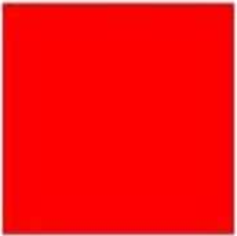
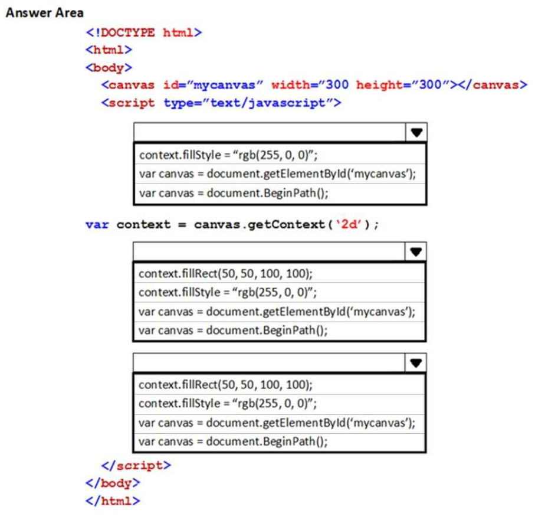
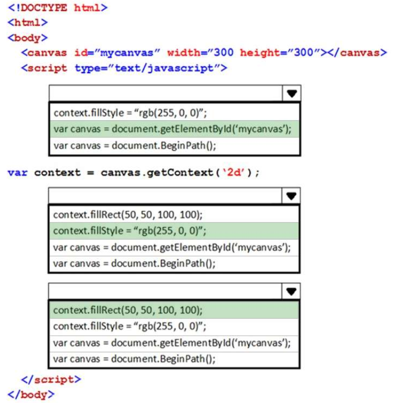

QUESTION 63
HOTSPOT
An HTML page has a CANVAS element.
You need to draw a red rectangle on the CANVAS element dynamically. The rectangle should resemble the
following graphic.
(Tienes que dibujar un rectángulo rojo en el elemento CANVAS de forma dinámica. El rectángulo debe parecerse al
siguiente gráfico.)

How should you build the code segment? To answer, select the appropriate options in the answer area.
NOTE: Each correct selection is worth one poin

RESPUESTA

El método DOM:CanvasRenderingContext2D.fillStyle() del API Canvas 2D define el color o estilo a utilizar dentro de las figuras geométricas. Por defecto es negro (#000).
El método DOM:CanvasRenderingContext2D.fillRect() del API Canvas 2D dibuja un rectángulo relleno en la posición ( x, y ). El tamaño del rectángulo se determina por width
El método DOM:CanvasRenderingContext2D.beginPath() del API Canvas 2D comienza una nueva ruta vaciando la lista de sub-rutas. Invoca este método cuando quieras crear una nueva ruta.
Si ponemos antes context.fillRect(50,50,100,100) que context.fillStyle="rgb(255,0,0)"
Si ponemos primero context.fillStyle="rgb(255,0,0)" y luego context.fillRect(50,50,100,100)